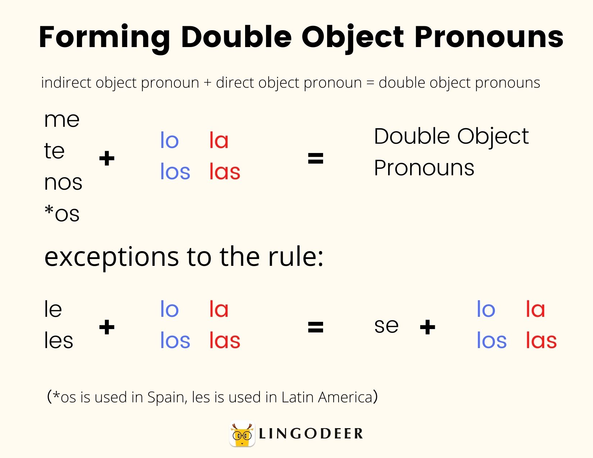

Spanish Grammar Notes
Buen vs. Bien
Buen is an adjective, while bien is an adverb. Understanding when to use each one depends on whether you are describing a noun or a verb.

- Buen: Used to describe nouns. Example: Es un buen libro.
- Bien: Used to describe verbs or actions. Example: Él canta bien.
Here's a quick resource that explains the difference further.
Imperfect vs. Preterite
In Spanish, choosing between the imperfect and preterite tenses depends on the context of the action being described:
- Imperfect: Used for habitual actions in the past. Example: Cuando era niño, jugaba en el parque.
- Preterite: Used for actions that have a clear beginning or end. Example: Ayer fui al cine.
Direct Object Pronouns vs. Indirect Object Pronouns
Direct and indirect object pronouns in Spanish are used to replace nouns and avoid repetition.
- Direct Object Pronouns: Replace the noun that directly receives the action. Example: Yo lo vi.
- Indirect Object Pronouns: Replace the noun to/for whom the action is done. Example: Yo le di el libro.
Here’s a useful diagram that explains the object pronouns:
